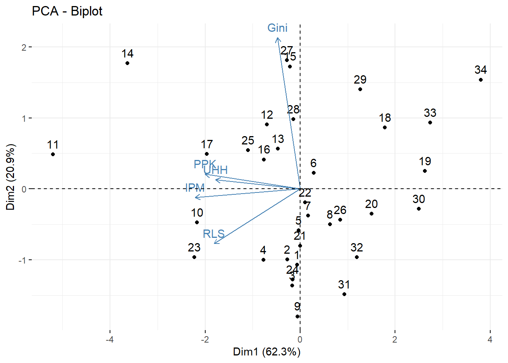
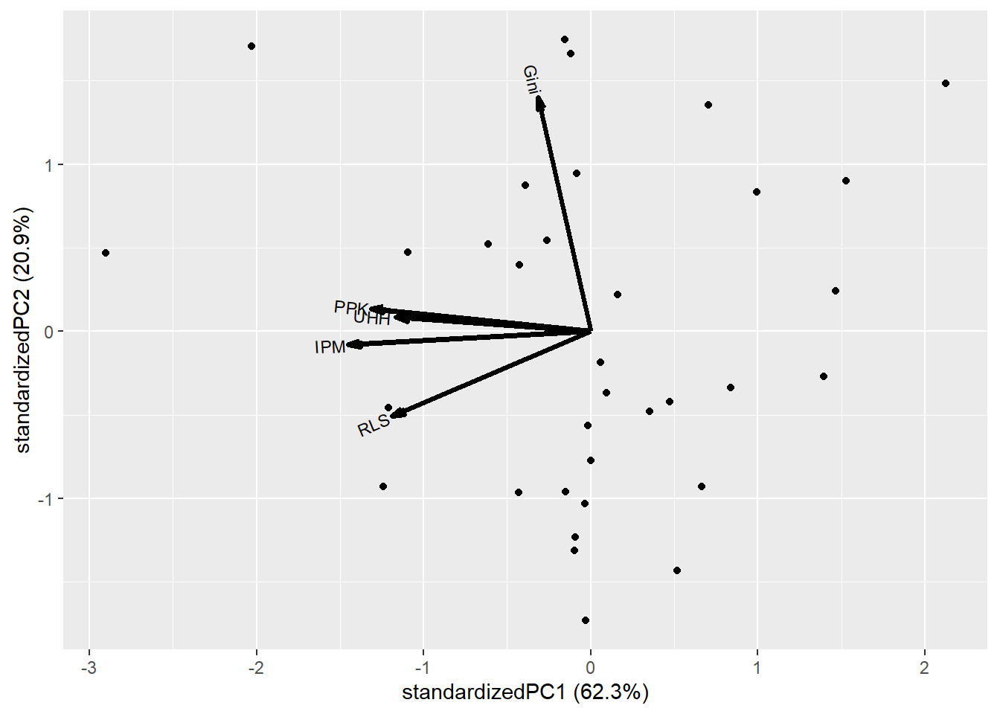
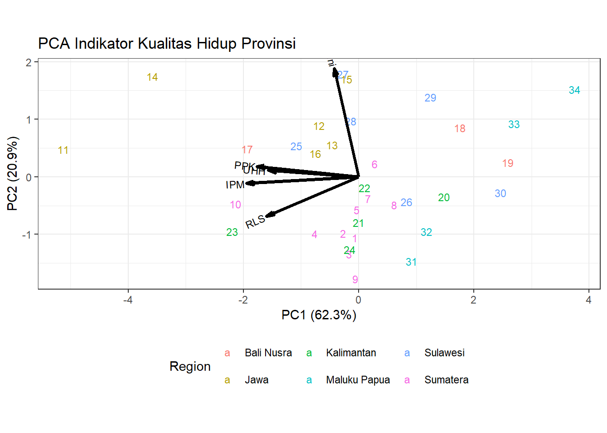

Chapter 6 PCA Analysis and Biplot
6.1 PCA
# impor data dari excel, beri nama: Provinsi
library(readxl)
Provinsi = read_excel("Data/provinsi.xlsx")
Prov.scaled = scale(Provinsi[,c(4:8)])
round(cor(Prov.scaled),3)
#> IPM UHH RLS PPK Gini
#> IPM 1.000 0.780 0.811 0.872 0.159
#> UHH 0.780 1.000 0.447 0.581 0.153
#> RLS 0.811 0.447 1.000 0.637 -0.059
#> PPK 0.872 0.581 0.637 1.000 0.249
#> Gini 0.159 0.153 -0.059 0.249 1.000# PCA langkah manual
Prov.eigen = eigen(cov(Prov.scaled))
Prov.eigen
#> eigen() decomposition
#> $values
#> [1] 3.11653307 1.04597347 0.52865259 0.28088555 0.02795532
#>
#> $vectors
#> [,1] [,2] [,3] [,4]
#> [1,] -0.5601680 -0.05311199 0.005227509 -0.0006949187
#> [2,] -0.4513030 0.05646383 0.811065327 0.2024129889
#> [3,] -0.4591728 -0.33781331 -0.497619343 0.5648220282
#> [4,] -0.5069166 0.09086739 -0.227624805 -0.7546468667
#> [5,] -0.1213811 0.93360390 -0.206658283 0.2655422416
#> [,5]
#> [1,] 0.82665781
#> [2,] -0.30714735
#> [3,] -0.32923179
#> [4,] -0.33685862
#> [5,] -0.02073819Prov.eigen$values
#> [1] 3.11653307 1.04597347 0.52865259 0.28088555 0.02795532
Prov.eigen$values/5
#> [1] 0.623306615 0.209194694 0.105730518 0.056177109
#> [5] 0.005591064
cumsum(Prov.eigen$values/5)
#> [1] 0.6233066 0.8325013 0.9382318 0.9944089 1.0000000Prov.pc = as.matrix(Prov.scaled) %*% Prov.eigen$vectors
round(Prov.pc,3)
#> [,1] [,2] [,3] [,4] [,5]
#> [1,] -0.063 -1.072 -0.028 0.684 0.141
#> [2,] -0.269 -0.998 -0.667 0.411 0.001
#> [3,] -0.170 -1.363 -0.172 -0.125 0.240
#> [4,] -0.771 -1.003 0.373 0.025 0.016
#> [5,] -0.032 -0.585 0.653 -0.002 0.008
#> [6,] 0.289 0.226 0.046 -0.122 -0.055
#> [7,] 0.167 -0.380 -0.246 0.160 0.149
#> [8,] 0.632 -0.498 0.644 -0.115 -0.054
#> [9,] -0.057 -1.798 0.675 -1.464 -0.089
#> [10,] -2.171 -0.475 -1.111 -0.280 -0.100
#> [11,] -5.201 0.488 -1.517 -0.455 -0.423
#> [12,] -0.699 0.908 0.818 0.388 -0.141
#> [13,] -0.467 0.567 1.901 -0.226 -0.064
#> [14,] -3.637 1.770 0.377 0.349 0.361
#> [15,] -0.211 1.726 0.527 -0.300 0.118
#> [16,] -0.763 0.414 -0.365 -0.198 0.007
#> [17,] -1.962 0.494 0.024 -0.719 0.052
#> [18,] 1.779 0.864 -0.537 -0.824 0.322
#> [19,] 2.630 0.251 -0.136 0.131 0.011
#> [20,] 1.501 -0.351 1.137 -0.243 -0.049
#> [21,] 0.004 -0.801 0.195 -0.277 -0.039
#> [22,] 0.104 -0.191 -0.358 -0.828 0.030
#> [23,] -2.225 -0.963 0.752 0.305 0.020
#> [24,] -0.162 -1.278 1.179 0.698 -0.173
#> [25,] -1.101 0.544 -0.154 0.823 -0.143
#> [26,] 0.847 -0.438 -0.472 0.097 0.061
#> [27,] -0.276 1.813 -0.105 0.254 0.105
#> [28,] -0.147 0.982 0.109 0.925 -0.004
#> [29,] 1.266 1.405 -0.356 -0.169 0.136
#> [30,] 2.501 -0.280 -0.787 -0.540 0.062
#> [31,] 0.929 -1.487 -1.397 0.735 0.080
#> [32,] 1.193 -0.966 -0.326 0.739 -0.008
#> [33,] 2.735 0.936 -0.533 0.218 -0.091
#> [34,] 3.806 1.539 -0.145 -0.057 -0.487# dengan fungsi prcomp
pc = prcomp(x = Prov.scaled, center=TRUE, scale=TRUE)
summary(pc)
#> Importance of components:
#> PC1 PC2 PC3 PC4 PC5
#> Standard deviation 1.7654 1.0227 0.7271 0.52999 0.16720
#> Proportion of Variance 0.6233 0.2092 0.1057 0.05618 0.00559
#> Cumulative Proportion 0.6233 0.8325 0.9382 0.99441 1.00000
round(pc$x,3)#scores
#> PC1 PC2 PC3 PC4 PC5
#> [1,] -0.063 -1.072 0.028 0.684 -0.141
#> [2,] -0.269 -0.998 0.667 0.411 -0.001
#> [3,] -0.170 -1.363 0.172 -0.125 -0.240
#> [4,] -0.771 -1.003 -0.373 0.025 -0.016
#> [5,] -0.032 -0.585 -0.653 -0.002 -0.008
#> [6,] 0.289 0.226 -0.046 -0.122 0.055
#> [7,] 0.167 -0.380 0.246 0.160 -0.149
#> [8,] 0.632 -0.498 -0.644 -0.115 0.054
#> [9,] -0.057 -1.798 -0.675 -1.464 0.089
#> [10,] -2.171 -0.475 1.111 -0.280 0.100
#> [11,] -5.201 0.488 1.517 -0.455 0.423
#> [12,] -0.699 0.908 -0.818 0.388 0.141
#> [13,] -0.467 0.567 -1.901 -0.226 0.064
#> [14,] -3.637 1.770 -0.377 0.349 -0.361
#> [15,] -0.211 1.726 -0.527 -0.300 -0.118
#> [16,] -0.763 0.414 0.365 -0.198 -0.007
#> [17,] -1.962 0.494 -0.024 -0.719 -0.052
#> [18,] 1.779 0.864 0.537 -0.824 -0.322
#> [19,] 2.630 0.251 0.136 0.131 -0.011
#> [20,] 1.501 -0.351 -1.137 -0.243 0.049
#> [21,] 0.004 -0.801 -0.195 -0.277 0.039
#> [22,] 0.104 -0.191 0.358 -0.828 -0.030
#> [23,] -2.225 -0.963 -0.752 0.305 -0.020
#> [24,] -0.162 -1.278 -1.179 0.698 0.173
#> [25,] -1.101 0.544 0.154 0.823 0.143
#> [26,] 0.847 -0.438 0.472 0.097 -0.061
#> [27,] -0.276 1.813 0.105 0.254 -0.105
#> [28,] -0.147 0.982 -0.109 0.925 0.004
#> [29,] 1.266 1.405 0.356 -0.169 -0.136
#> [30,] 2.501 -0.280 0.787 -0.540 -0.062
#> [31,] 0.929 -1.487 1.397 0.735 -0.080
#> [32,] 1.193 -0.966 0.326 0.739 0.008
#> [33,] 2.735 0.936 0.533 0.218 0.091
#> [34,] 3.806 1.539 0.145 -0.057 0.487round(pc$rotation,3) #loadings
#> PC1 PC2 PC3 PC4 PC5
#> IPM -0.560 -0.053 -0.005 -0.001 -0.827
#> UHH -0.451 0.056 -0.811 0.202 0.307
#> RLS -0.459 -0.338 0.498 0.565 0.329
#> PPK -0.507 0.091 0.228 -0.755 0.337
#> Gini -0.121 0.934 0.207 0.266 0.021

6.2 Biplot
# biplot
library(factoextra)
#> Loading required package: ggplot2
#> Warning: package 'ggplot2' was built under R version 4.4.3
#> Welcome! Want to learn more? See two factoextra-related books at https://goo.gl/ve3WBa
fviz_pca(pc)
# alternatif bentuk biplot
# install.packages("remotes")
# remotes::install_github("vqv/ggbiplot")
library(ggbiplot)
#> Warning: package 'ggbiplot' was built under R version 4.4.3
ggbiplot(pc)
biplot = ggbiplot(pcobj = pc,
choices = c(1,2),
obs.scale = 1, var.scale = 1,
labels = row.names(Provinsi),
varname.size = 3,
varname.abbrev = FALSE,
var.axes = TRUE,
group = Provinsi$Region)
biplot
biplot2 = biplot + theme_bw() +
theme(legend.position="bottom") +
labs(
title = "PCA Indikator Kualitas Hidup Provinsi",
color = "Region")
biplot2